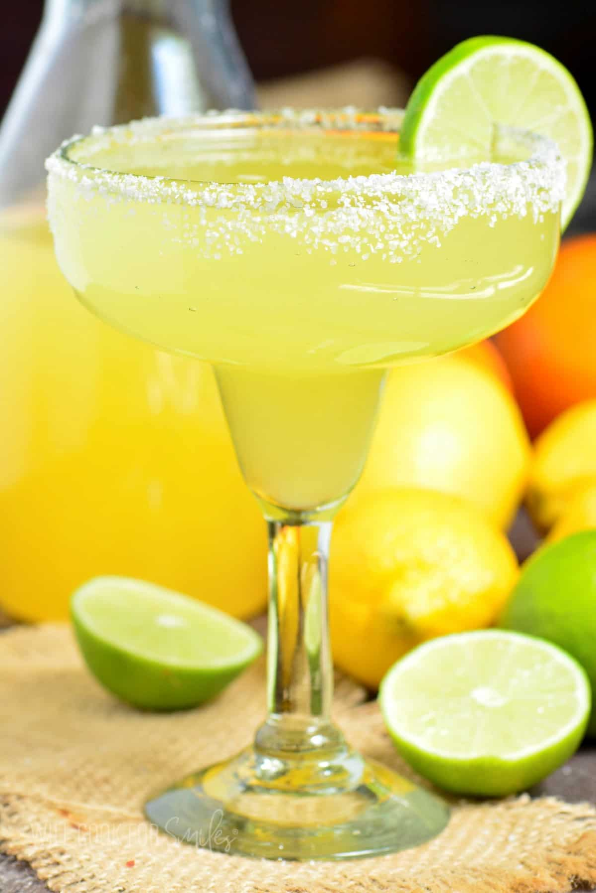

Classical Margarita Recipe
A classical margarita is everyone’s favorite summer cocktail. Its bright citrus flavor and smooth tequila base
make it the perfect drink for beach days, backyard parties, and relaxing evenings with friends.

Ingredients
- 2 oz silver or reposado tequila
- 1 oz orange liqueur: triple sec, Cointreau, or Grand Marnier
- 3-4 oz margarita mix
- coarse salt for rim
- limes for garnish
- ice cubes optional
Instructions
- Combine margarita mix, tequila, and orange liqueur in a blender (no ice) and pulse a few times.
OR
Combine margarita mix and liquors in a cocktail shaker, add some ice, and shake vigorously for 15-20 seconds.
- Spread some coarse salt in a shallow, wide bowl.
- Rub the glass rim with a lime and dip the rim into coarse salt, to coat the rim all around.
- Pour margarita into the glass (with or without the ice) and garnish with a slice of lime.
- Enjoy!!